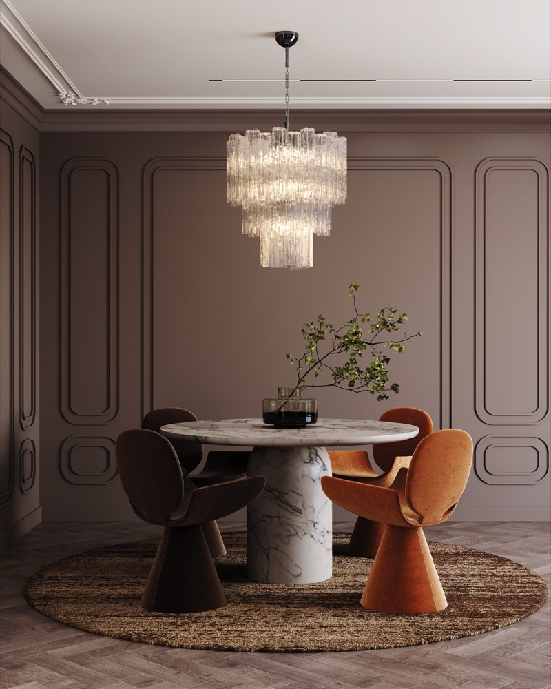

Шелковисто‑матовая / матовая / полуматовая
Yalaz Plus
Декоративная финишная краска для внутренних работ на основе акриловой эмульсии: воздухопроницаемая, устойчивая к мытью и истиранию, с высокой цветостойкостью и водоотталкивающими свойствами.
- Стойкость к мытью
- Дышащая
- Не желтеет
- Противогрибковая
- Без запаха · низкий VOC